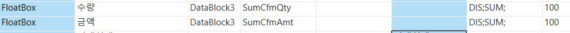
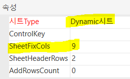
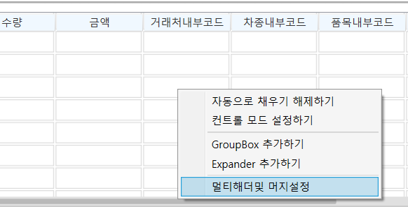
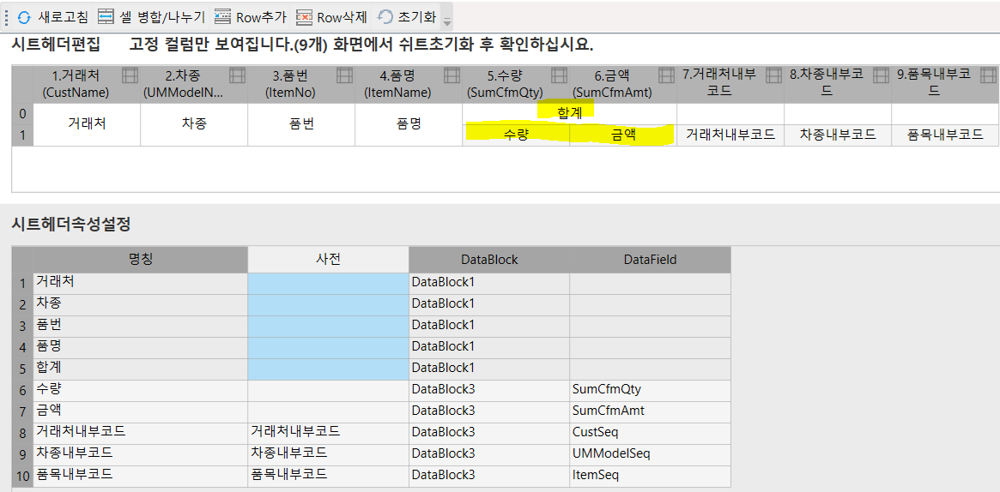

3/23 - 합계컬럼(세동) 다이나믹
사업계획조회(판매)_sdng
FrmWPNSLItemPlanList_sdng
sdng_SWPNSLItemPlanListQuery
- 시트에 수량,금액 합계 컬럼 추가하기 (가변 말고 고정으로)

합계수량, 수량(합계) => 그냥 '수량'
Dynamic시트 이기 때문에 SheetFixCols (고정값) 증가 (7 => 9)

시트 우클릭 - 멀티헤더및 머지설정

초기화 누르고 다시 셀 병합
거래처, 차종, 품번 등은 위,아래 셀 병합
수량, 금액 합계 부분은 왼,오른쪽 셀 병합

--사업계획조회(판매)_sdng
DROP PROC sdng_SWPNSLItemPlanListQuery
GO
CREATE PROC sdng_SWPNSLItemPlanListQuery
@ServiceSeq INT = 0,
@WorkingTag NVARCHAR(10)= '',
@CompanySeq INT = 1,
@LanguageSeq INT = 1,
@UserSeq INT = 0,
@PgmSeq INT = 0,
@IsTransaction BIT = 0
AS
DECLARE @BizUnit INT, -- 사업단위
@PlanYear NCHAR(4), -- 계획년도
@PlanType INT, -- 계획기준
@CustSeq INT, -- 거래처내부코드
@UMModelSeq INT, -- 차종
@ItemName NVARCHAR(100), -- 품명
@ItemNo NVARCHAR(100), -- 품번
@SumCfmQty DECIMAL(19,5), -- 합계(수량) (3/23 박성재)
@SumCfmAmt DECIMAL(19,5), -- 합계(금액) (3/23 박성재)
@DicPrice NVARCHAR(100), -- 헤더명칭 : 단가
@DicCfmQty NVARCHAR(100), -- 헤더명칭 : 수량
@DicCfmAmt NVARCHAR(100) -- 헤더명칭 : 금액
SELECT @BizUnit = ISNULL(BizUnit , 0),
@PlanYear = ISNULL(PlanYear , ''),
@PlanType = ISNULL(PlanType , 0),
@CustSeq = ISNULL(CustSeq , 0),
@UMModelSeq = ISNULL(UMModelSeq, 0),
@ItemName = ISNULL(ItemName , ''),
@ItemNo = ISNULL(ItemNo ,'')
FROM #BIZ_IN_DataBlock1
--=======================
-- 헤더 명칭 정의
--=======================
SELECT @DicPrice = ISNULL(Word,'단가') FROM _TCADictionary WHERE LanguageSeq = @LanguageSeq AND WordSeq = 2359
SELECT @DicCfmQty = ISNULL(Word,'수량') FROM _TCADictionary WHERE LanguageSeq = @LanguageSeq AND WordSeq = 1628
SELECT @DicCfmAmt = ISNULL(Word,'금액') FROM _TCADictionary WHERE LanguageSeq = @LanguageSeq AND WordSeq = 290
--=======================
-- 가변헤더 임시테이블
--=======================
CREATE TABLE #Title(
ColIDX INT,
TitleName1 NVARCHAR(100),
TitleSeq1 INT,
TitleName2 NVARCHAR(100),
TitleSeq2 INT
)
INSERT INTO #Title(ColIDX, TitleSeq1, TitleName1, TitleSeq2, TitleName2)
SELECT DISTINCT A.SMonth - 1, LEFT(A.Solar,6), SUBSTRING(A.Solar,5,2) + '월', B.Seq, B.Title
FROM _TComCalendar AS A
LEFT OUTER JOIN (SELECT 1 AS Seq, @DicPrice AS Title
UNION
SELECT 2 AS Seq, @DicCfmQty AS Title
UNION
SELECT 3 AS Seq, @DicCfmAmt AS Title) AS B ON 1=1
WHERE SUBSTRING(A.Solar,1,4) = @PlanYear
ORDER BY LEFT(A.Solar, 6), B.Seq
--=======================
-- 고정부 임시테이블
--=======================
CREATE TABLE #FixData
(
RowIDX INT IDENTITY(0,1),
CustName NVARCHAR(100), -- 거래처
UMModelName NVARCHAR(100), -- 차종
ItemNo NVARCHAR(100), -- 품번
ItemName NVARCHAR(100), -- 품명
SumCfmQty DECIMAL(19,5), -- 합계(수량) (3/23 박성재)
SumCfmAmt DECIMAL(19,5), -- 합계(금액) (3/23 박성재)
CustSeq INT, -- 거래처내부코드
UMModelSeq INT, -- 차종내부코드
ItemSeq INT, -- 품목내부코드
BizUnit INT, -- 사업단위내부코드
PlanType INT -- 계획기준
)
INSERT INTO #FixData
SELECT
ISNULL(B.CustName , '') AS CustName
,ISNULL(C.MinorName , '') AS UMModelName
,ISNULL(D.ItemNo , '') AS ItemNo
,ISNULL(D.ItemName , '') AS ItemName
,SUM(ISNULL(A.CfmQty , 0)) AS SumCfmQty
,SUM(ISNULL(A.CfmAmt , 0)) AS SumCfmAmt
,ISNULL(A.CustSeq , 0) AS CustSeq
,ISNULL(A.UMModelSeq , 0) AS UMModelSeq
,ISNULL(A.ItemSeq , 0) AS ItemSeq
,ISNULL(A.BizUnit , 0) AS BizUnit
,ISNULL(A.PlanType , 0) AS PlanType
FROM sdng_TPNSLItemPlan AS A WITH(NOLOCK)
LEFT OUTER JOIN _TDACust AS B WITH(NOLOCK) ON A.CompanySeq = B.CompanySeq
AND A.CustSeq = B.CustSeq
LEFT OUTER JOIN _TDAUMinor AS C WITH(NOLOCK) ON A.CompanySeq = C.CompanySeq
AND A.UMModelSeq = C.MinorSeq
LEFT OUTER JOIN _TDAItem AS D WITH(NOLOCK) ON A.CompanySeq = D.CompanySeq
AND A.ItemSeq = D.ItemSeq
LEFT OUTER JOIN _TDABizUnit AS E WITH(NOLOCK) ON A.CompanySeq = E.CompanySeq
AND A.BizUnit = E.BizUnit
WHERE A.CompanySeq = @CompanySeq
AND (@BizUnit = 0 OR E.BizUnit = @BizUnit) -- 사업단위
AND LEFT(A.PlanYM, 4) = @PlanYear -- 계획년도
AND (@PlanType = 0 OR A.PlanType = @PlanType) -- 계획기준
AND (@CustSeq = 0 OR A.CustSeq = @CustSeq) -- 거래처
AND (@UMModelSeq = 0 OR A.UMModelSeq = @UMModelSeq) -- 차종
AND (@ItemName = '' OR D.ItemName LIKE @ItemName + N'%') -- 품명
AND (@ItemNo = '' OR D.ItemNo LIKE @ItemNo + N'%') -- 품번
GROUP BY
B.CustName ,
C.MinorName ,
D.ItemNo ,
D.ItemName ,
A.CustSeq ,
A.UMModelSeq,
A.ItemSeq ,
A.BizUnit ,
A.PlanType
ORDER BY ISNULL(A.CustSeq, 0), ISNULL(A.UMModelSeq, 0), ISNULL(A.ItemSeq, 0)
--=======================
-- 가변헤더 SELECT
--=======================
SELECT TitleName1, TitleSeq1, TitleName2, TitleSeq2, ColIDX
FROM #Title
ORDER BY ColIDX
--=======================
-- 고정부 SELECT
--=======================
SELECT CustName
,UMModelName
,ItemNo
,ItemName
,SumCfmQty
,SumCfmAmt
,CustSeq
,UMModelSeq
,ItemSeq
FROM #FixData
ORDER BY RowIDX
--=======================
-- 가변부 SELECT
--=======================
SELECT B.RowIDX,A.ColIDX,
MAX(CASE WHEN A.TitleSeq2 = 1 THEN ISNULL(C.Price ,0) ELSE 0 END) AS Price,
SUM(CASE WHEN A.TitleSeq2 = 2 THEN ISNULL(C.CfmQty ,0) ELSE 0 END) AS CfmQty,
SUM(CASE WHEN A.TitleSeq2 = 3 THEN ISNULL(C.CfmAmt ,0) ELSE 0 END) AS CfmAmt
FROM #Title AS A
JOIN #FixData AS B ON 1=1
LEFT OUTER JOIN sdng_TPNSLItemPlan AS C ON C.CompanySeq = @CompanySeq
AND C.PlanYM = A.TitleSeq1
AND C.BizUnit = B.BizUnit
AND C.PlanType = B.PlanType
AND C.CustSeq = B.CustSeq
AND C.UMModelSeq = B.UMModelSeq
AND C.ItemSeq = B.ItemSeq
GROUP BY B.RowIDX, A.ColIDX
ORDER BY B.RowIDX, A.ColIDX
RETURN